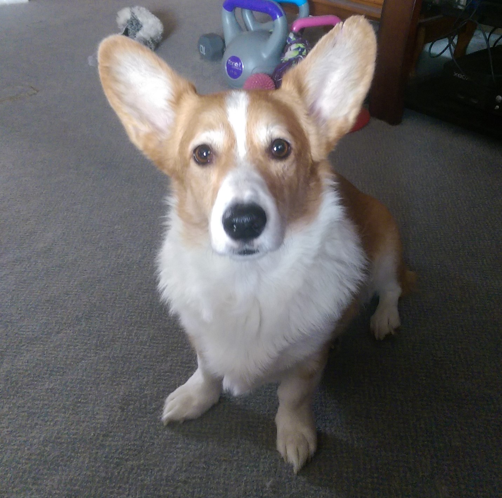
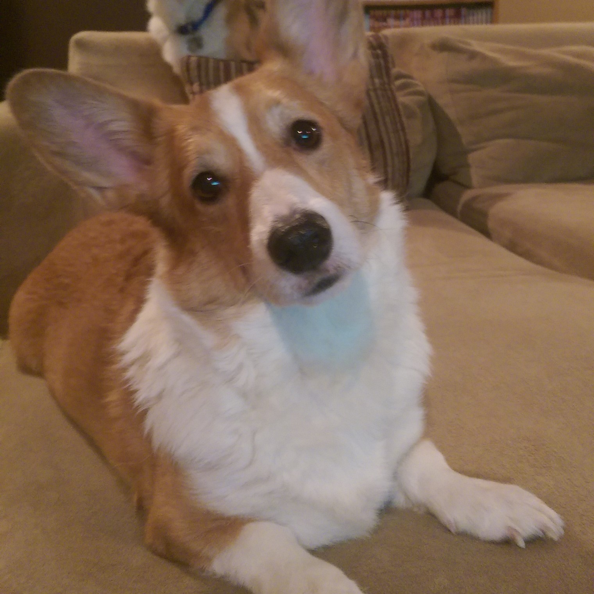
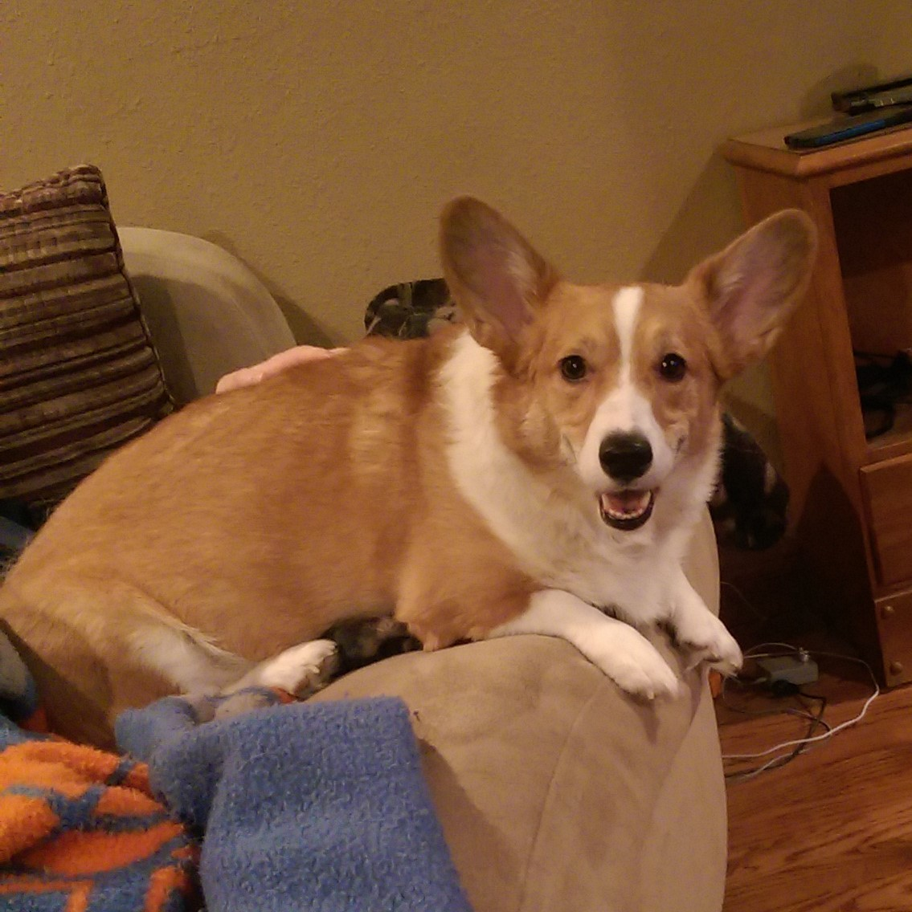
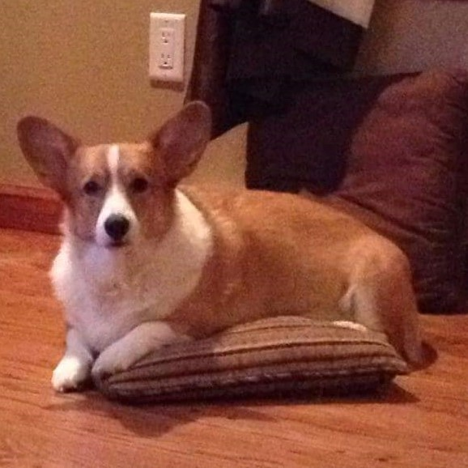

The Honeyager Dog House - Beginnings:




This is the first of my 3 dogs, Ein. They are Pembroke Welsh Corgis, and they are all 5 years old. All 3 of my dogs are from the same litter, but they have distinctly different personalities. Here are a few things that make Ein unique:
- Ein was named for the dog in the anime, Cowboy Bebop.
- Ein gets very upset if he doesn't get hugged specifically when he wants.
- Ein hoards his toys in such a fashion that we say he has "dragon sickness".
- Ein is smart enough to take down baby gates.
Continue to the next page to learn about Loki, Dog of Chaos.
Next Page